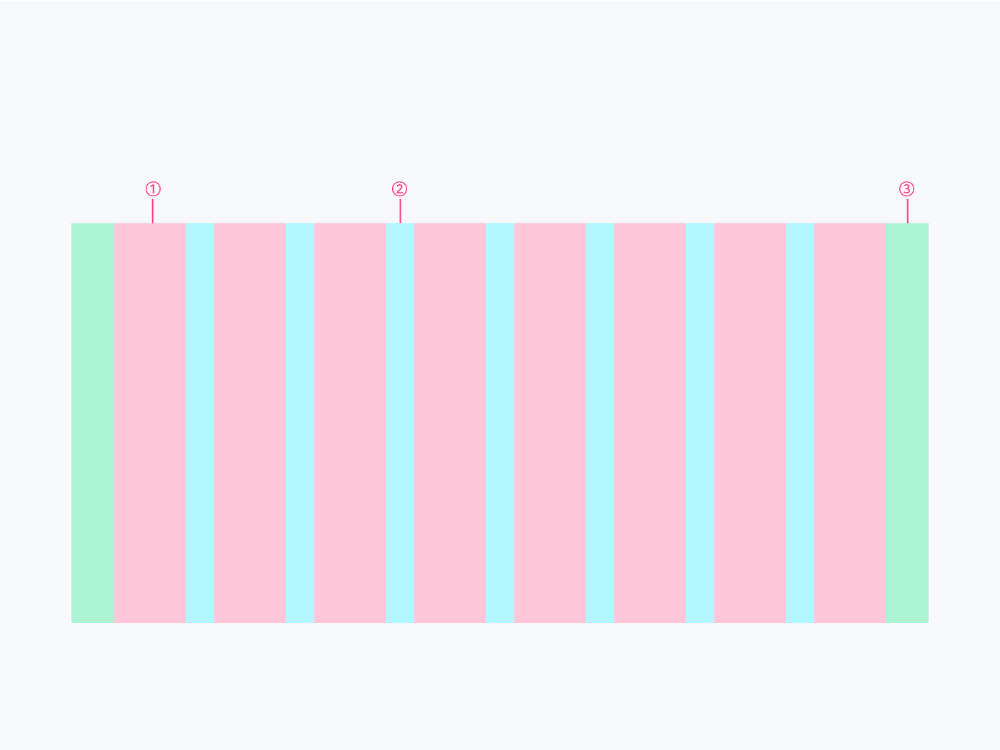
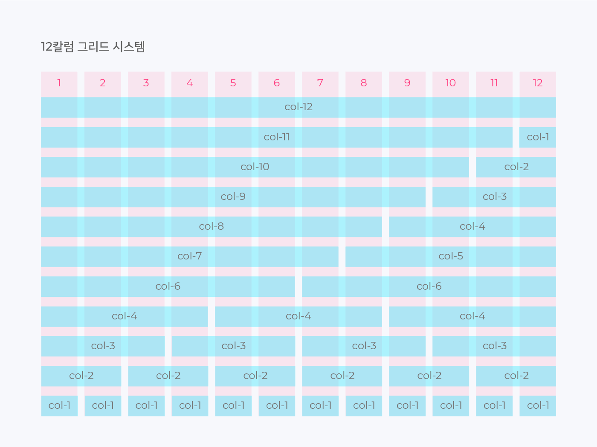
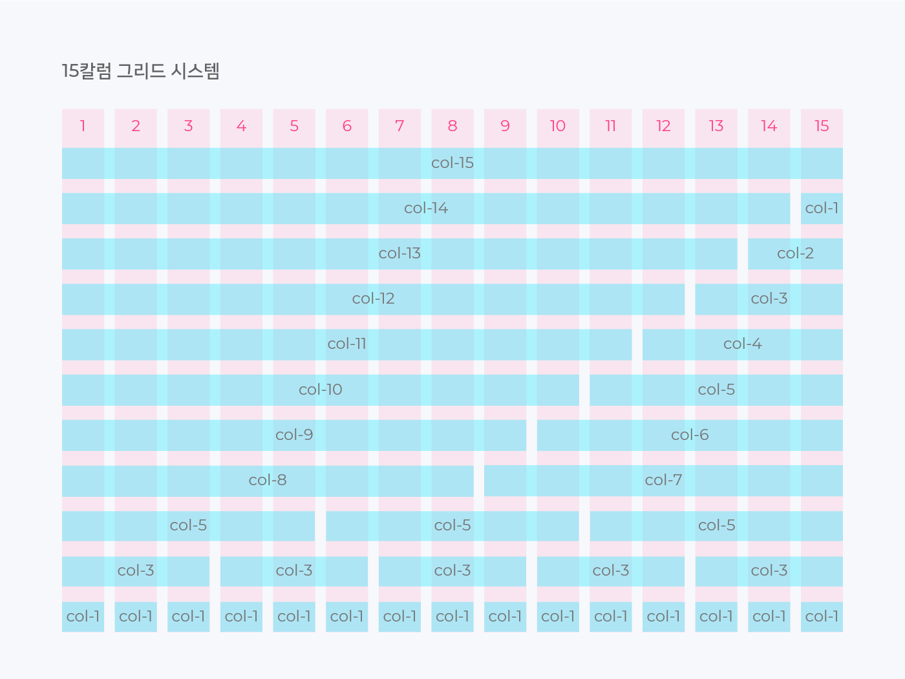
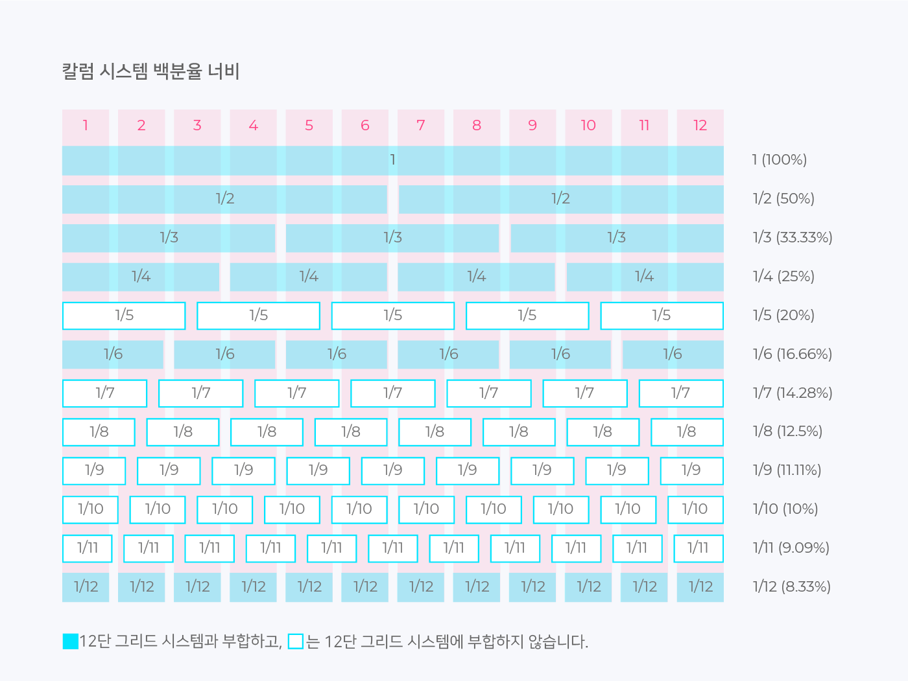

그리드 시스템
그리드 시스템이란
그리드 시스템(Grid System)에서 ‘Grid’는 격자나 바둑판 모양의 눈금을 뜻하며 일반적으로는 수직과 수평으로 면이 분할된 것을 의미합니다. 1970년대 중반부터 본격적으로 사용된 그리드 시스템은 디자인의 레이아웃에 규칙을 부여하는 수단입니다. 편집디자인(인쇄물)에서 시작해 현재 웹 개발 분야에도 적용하여 웹 페이지를 제작하는 기초 단계에서 그리드 시스템을 사용하면 제작을 쉽고 빠르게 진행할 수 있습니다.
그리드 시스템의 장점
디자인 레이아웃은 모든 측정값이 동일한 규칙을 따르면 자동으로보다 일관된 UI를 얻게 됩니다. 그리드 시스템은 균일한 요소와 간격을 사용하여 플랫폼, 환경 및 화면 크기에 일관성을 부여하고 그래픽 요소의 체계적인 배열을 도와줍니다. 또한 협업의 목적으로 내부의 기준을 정하는 것에 도움이 되며, 또한 반응형 디자인의 경우 해상도 대응이 쉬워지고 디자이너와 개발자 사이의 쉬운 커뮤니케이션 시스템이 됩니다.
웹디자인에서의 그리드 시스템
그리드 시스템의 기본 요소
그리드는 칼럼(Column), 거터(Gutter), 마진(Margin) 세 가지 요소로 구성됩니다.
① 칼럼(Columns)
실제로 컨텐츠를 포함하는 부분은 칼럼이라고 합니다. 칼럼의 넓이는 고정된 값으로 제공되며, 1개 이상의 칼럼이 조합하여 컨텐츠의 크기를 결정합니다. 그리고 하나의 칼럼 안에는 반드시 양 옆에 여백, 즉 거터를 동반합니다.
② 거터(Gutters)
거터는 칼럼과 칼럼사이의 공간입니다. 1개 이상의 칼럼이 조합된 컨텐츠와 컨텐츠 사이의 간격이 됩니다. 거터의 넓이 역시 고정 값으로 제공하며, 스크린의 너비에 비례하여 넓은 거터는 큰 스크린에 적합니다. 칼럼사이에 공백을 더 많이 생성하기 때문입니다.
③ 마진(Margins)
여백은 내용과 화면의 왼쪽 및 오른쪽 가장자리 사이의 공간입니다. 여백 너비의 넓이도 고정 값으로 정의되며, 여백 역시 큰 여백은 내용의 둘레에 더 많은 공백을 만들기 때문에 큰 스크린에 적합니다.
칼럼 그리드 시스템
제한된 스크린 너비에서 칼럼의 수에 따라 콘텐츠를 표현할 수 있는 넓이는 달라집니다. 하지만 단순히 칼럼의 수가 많다고 해서 좋은 그리드라고 볼 순 없습니다. 웹 디자인에서는 일반적으로 2, 3, 4, 6칼럼으로 쉽게 분할 할 수 있는 12분할 그리드와 3, 5칼럼으로 분할 할 수 있는 15분할 그리드를 주로 사용하고 있습니다.
  그리드 시스템은 사실상 디자인 작업 시에만 필요합니다. 그리드 시스템은 디자이너와 개발자 간의 소통을 위한 참고사항이며, 그리드 가이드라인에 따라 디자인을 효율적으로 하기 위한 것입니다. 개발 단계에서 그리드 시스템은 사용되지 않으며 분할된 칼럼을 기준으로 백분율로 사용되기 때문에 12, 15개의 고정된 칼럼 개수는 의미가 없습니다. 그러므로 디자인 작업 시에 12칼럼 그리드에서 5분할을 할 수 없다고 생각하지 말고, 위에 이미지로 첨부한 칼럼 시스템 백분율 너비를 참고하여 유연하게 그리드를 사용하는 것이 좋습니다.